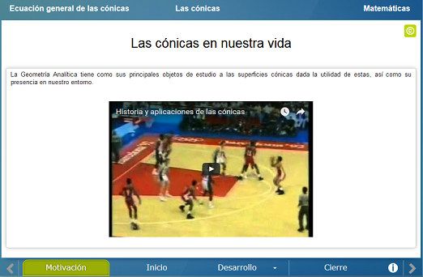
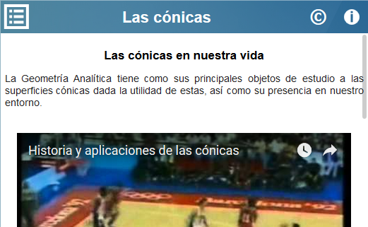
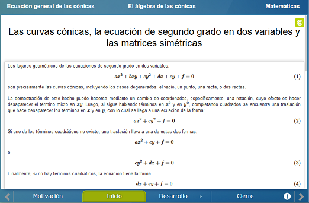
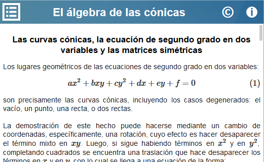
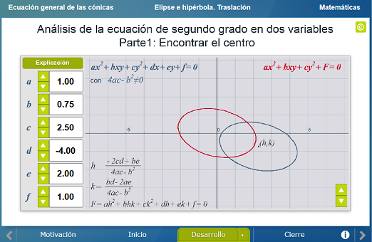
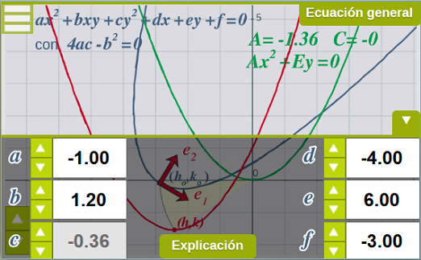
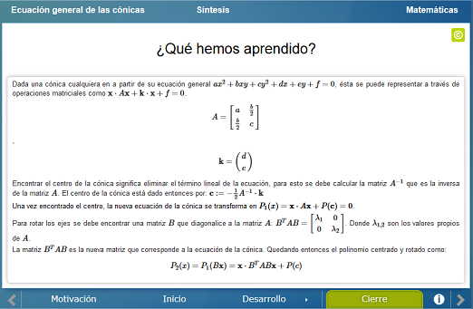
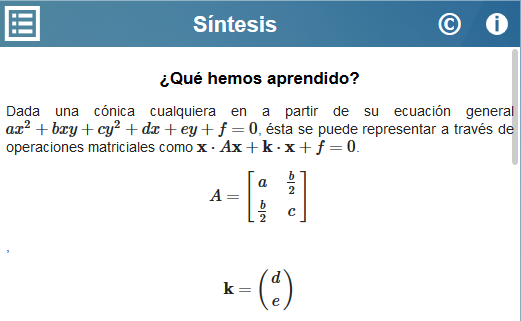

Ecuación Geneal de las Cónicas. Enfoque Vectorial
Ecuación Geneal de las Cónicas. Enfoque Vectorial
 Ecuación Geneal de las Cónicas. Enfoque Vectorial
Ecuación Geneal de las Cónicas. Enfoque Vectorial
Esta unidad interactiva está hecha con la intención de que el alumno conozca herramientas del Álgebra Lineal a través del tratamiento de las secciones cónicas de la Geometría Analítica. Respecto a la Geometría Analítica, el alumno podrá analizar los lugares geométricos de las cónicas para que a partir de la ecuación se determine la gráfica. El alumno logrará un nivel taxonómico de Análisis. En cuanto al Álgebra Lineal, el alumno utilizará matrices para la resolución de problemas, generando un nivel taxonómico de utilización.
A partir de un vídeo explicativo se motiva el interés por el estudio de las cónicas desde la civilización griega hasta nuestros tiempos.


En esta sección se habla de los lugares geométricos de la ecuación de segundo grado y el efecto que produce aplicar una transformación lineal: una translación o una rotación.


Esta sección consiste en darle un tratamiento al estudio de las cónicas con herramientas del álgebra lineal, expresando la rotación y la translación como una transformación lineal representada por matrices.


Se presenta de manera resumida el proceso utilizado en el Desarrollo para la traslación y rotación de los ejes de las cónicas.


| Diseño del contenido | Ana Belém Zavaleta Ramos José Luis Abreu León |
| Diseño funcional | Ana Belém Zavaleta Ramos José Luis Abreu León |
| Programación | Ana Belém Zavaleta Ramos José Luis Abreu León |
| Asesoría de programación | José Luis Abreu León David Mustri Trejo |
| Diseño gráfico | Ricardo López Gómez |
| Coordinación | Leticia Montserrat Vargas Rocha |
| Diseño funcional | Elsa Sirenia Vega Camacho |
| Programación | Elsa Sirenia Vega Camacho |
| Asesoría de programación | Leticia Montserrat Vargas Rocha |
| Diseño gráfico | Francisco Varela Fuentes |
| Coordinación | Leticia Montserrat Vargas Rocha |
| Desarrollo del contenedor | Oscar Escamilla González |
Los contenidos de esta unidad didáctica interactiva están bajo una licencia Creative Commons Reconocimiento-NoComercial-CompartirIgual.
La unidad didáctica fue creada con Arquímedes, una herramienta de código abierto.
La unidad didáctica contiene escenas elaboradas con Descartes, una herramienta de código abierto.
LITE - UnADM 2014